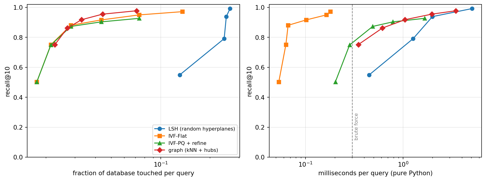
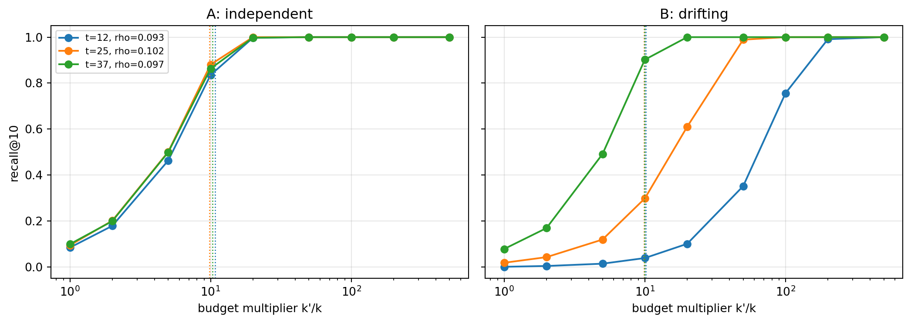
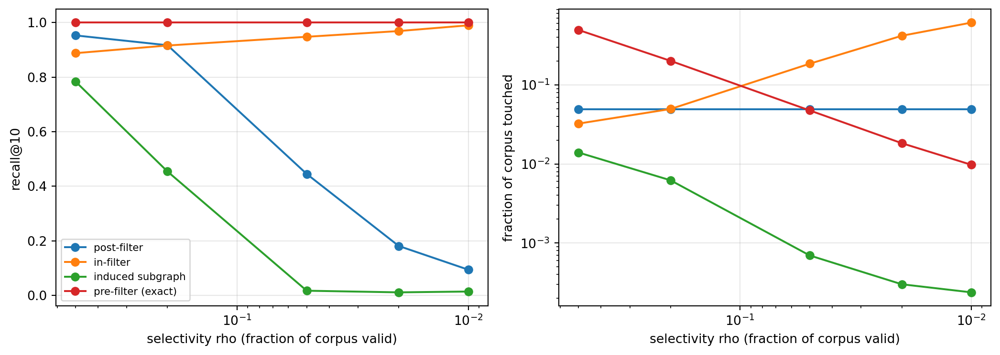

Every retrieval-augmented generation system, every “more like this” recommendation, every semantic search box, and every embedding-based deduplication job reduces to the same primitive: given a query vector, find the stored vectors closest to it. The K-Nearest Neighbors chapter treats this as a modeling problem and notes in passing that exact search becomes the bottleneck at scale. This chapter treats it as a systems problem. With ten million 768-dimensional embeddings, an exact scan touches roughly thirty gigabytes of floats per query. At a few hundred queries per second that is not a model, it is a denial-of-service attack on your own hardware.
Approximate nearest neighbor (ANN) search gives up a guarantee of exactness in exchange for orders-of-magnitude speedups. The art is in giving up as little as possible. We first quantify the cost of exact search and the metric we use to judge approximations, recall@\(k\). We then build, from scratch in NumPy, one representative of each of the four families that matter: hashing (random-projection LSH), partitioning (an inverted file index), compression (product quantization), and proximity graphs (a navigable \(k\)-NN graph searched like the bottom layer of HNSW). We measure each on the same data and plot recall against query cost. The second half of the chapter covers the problem most production systems actually have, which is filtered search, with special attention to its temporal form, where only the items valid at a given moment may be returned. It closes with how ANN indexes sit inside vector databases and RAG pipelines.
104.1 The Problem and How We Score Solutions
104.1.1 Exact search and its cost
We hold \(N\) vectors \(\mathbf{x}_1, \dots, \mathbf{x}_N \in \mathbb{R}^d\) and receive a query \(\mathbf{q}\). The exact \(k\) nearest neighbors under a distance \(\delta\) are
For text and image embeddings the usual distances are Euclidean distance, inner product, and cosine distance. They coincide in ranking once vectors are normalized to unit length, because \(\lVert \mathbf{q} - \mathbf{x} \rVert^2 = 2 - 2\,\mathbf{q}^\top \mathbf{x}\) when \(\lVert\mathbf{q}\rVert = \lVert\mathbf{x}\rVert = 1\). We normalize throughout and rank by inner product.
A brute-force scan costs \(O(Nd)\) arithmetic per query and needs all \(Nd\) floats in fast memory. Space-partitioning trees such as the \(k\)-d tree (reference 11) answer exact queries in roughly logarithmic time in low dimensions, but in high dimensions the distance from a query to its nearest neighbor approaches the distance to its farthest neighbor (reference 12), the pruning bounds stop pruning, and trees degrade back to a scan. This curse of dimensionality is what makes approximation necessary rather than merely convenient.
104.1.2 Recall@k and the cost axis
An ANN method returns a set \(\hat{A}\) of \(k\) indices. Its quality on a query is
averaged over a query set. Recall is always measured against an exact ground truth computed offline. The cost side has several components: query latency, throughput, memory per vector, build time, and update cost. Benchmarks such as ANN-Benchmarks plot recall against queries per second for each method across its parameter sweep and compare the resulting Pareto frontiers (reference 13). Since our implementations are written in Python, where interpreter overhead dominates small operations, we report two cost measures. The first is the fraction of the database touched per query (distance computations or code lookups), which is implementation-independent. The second is wall-clock time, with the caveat that compiled libraries move every curve far to the left.
The following block generates a synthetic corpus that looks like a modern embedding collection: unit vectors in 64 dimensions drawn from a mixture of a hundred overlapping clusters, plus two hundred held-out queries from the same distribution. It computes the exact answers and times the brute-force baseline.
Code
import heapqimport timeimport numpy as npimport pandas as pdimport matplotlib.pyplot as pltfrom sklearn.cluster import KMeansfrom threadpoolctl import threadpool_limitst_start = time.perf_counter()rng = np.random.default_rng(1203)N, d, n_clusters, n_queries, K =20_000, 64, 100, 200, 10centers = rng.normal(0, 1, (n_clusters, d))spread = rng.uniform(1.0, 1.8, n_clusters)def sample(m): c = rng.integers(0, n_clusters, m) x = centers[c] + spread[c, None] * rng.normal(0, 1, (m, d))return (x / np.linalg.norm(x, axis=1, keepdims=True)).astype(np.float32)X, Q = sample(N), sample(n_queries)ground_truth = np.argsort(-(Q @ X.T), axis=1)[:, :K]def recall_at_k(found):return np.mean([len(set(np.asarray(f)[:K]) &set(g)) / Kfor f, g inzip(found, ground_truth)])def timed(fn, queries): t = time.perf_counter() out = [fn(q) for q in queries]return out, (time.perf_counter() - t) /len(queries) *1e3def brute_force(q): s = X @ q top = np.argpartition(-s, K)[:K]return top[np.argsort(-s[top])], Nbf_out, bf_ms = timed(brute_force, Q)results = [{"method": "brute force", "setting": "-", "recall": recall_at_k([o[0] for o in bf_out]),"touched": 1.0, "ms_per_query": bf_ms}]print(f"Brute force: recall {results[0]['recall']:.3f}, {bf_ms:.3f} ms per query, "f"{X.nbytes /1e6:.1f} MB of float32 vectors")
Brute force: recall 1.000, 0.300 ms per query, 5.1 MB of float32 vectors
Brute force is exact and, at twenty thousand vectors, fast, because a single matrix-vector product is exactly what BLAS is built for. Never dismiss it: below roughly a million vectors, or when queries can be batched, a well-implemented scan on a GPU is often the right answer. The approximate methods below earn their keep as \(N\) grows, because their cost grows sublinearly while the scan’s grows linearly.
104.2 Locality-Sensitive Hashing
104.2.1 The idea
Indyk and Motwani introduced locality-sensitive hashing as a way to answer approximate queries in time sublinear in \(N\) (reference 1). A hash family \(\mathcal{H}\) is \((r, cr, p_1, p_2)\)-sensitive if nearby points collide often and distant points rarely:
with \(p_1 > p_2\). For angular distance, Charikar’s random-hyperplane hash \(h_{\mathbf{w}}(\mathbf{x}) = \mathbb{1}[\mathbf{w}^\top \mathbf{x} > 0]\) with \(\mathbf{w} \sim \mathcal{N}(0, I_d)\) collides with probability
where \(\theta\) is the angle between the vectors (reference 2). For Euclidean distance, Datar and colleagues built the analogous family from \(p\)-stable projections (reference 3).
A single bit is a weak filter, so LSH concatenates \(b\) bits into one bucket key, which drives the collision probability of distant pairs down to \(p_2^b\), and then builds \(L\) independent tables, which drives the miss probability of near pairs down to \((1 - p_1^b)^L\). A query looks up its bucket in every table, takes the union of the buckets as the candidate set, and reranks the candidates exactly. The two knobs pull in opposite directions: larger \(b\) makes buckets purer and smaller, larger \(L\) recovers the recall that purity loses, at the cost of \(L\) times the memory.
Code
POW =Nonedef lsh_build(b, L):global POW POW =1<< np.arange(b, dtype=np.int64) tables = []for _ inrange(L): R = rng.normal(0, 1, (d, b)).astype(np.float32) codes = ((X @ R) >0).astype(np.int64) @ POW order = np.argsort(codes, kind="stable") tables.append((R, codes[order], order))return tablesdef lsh_query(tables, q): cands = []for R, sorted_codes, order in tables: code =int(((q @ R) >0).astype(np.int64) @ POW) lo = np.searchsorted(sorted_codes, code, "left") hi = np.searchsorted(sorted_codes, code, "right") cands.append(order[lo:hi]) c = np.unique(np.concatenate(cands))iflen(c) ==0:return c, 0 s = X[c] @ qreturn c[np.argsort(-s)[:K]], len(c)for b, L in [(6, 8), (6, 16), (8, 64), (10, 256)]: tables = lsh_build(b, L) out, ms = timed(lambda q: lsh_query(tables, q), Q) results.append({"method": "LSH (random hyperplanes)", "setting": f"b={b}, L={L}","recall": recall_at_k([o[0] for o in out]),"touched": np.mean([o[1] for o in out]) / N, "ms_per_query": ms})print(pd.DataFrame(results[1:]).round(4).to_string(index=False))
The table shows the classic LSH tradeoff. Moving from \((b, L) = (6, 16)\) to \((10, 256)\) raises recall at roughly the same candidate fraction, because longer keys make each bucket purer while more tables recover the near neighbors that any one table misses. The price is memory and hashing work that grow linearly in \(L\), and even the best configuration here scans a large share of the corpus. Neighbors in dense embedding spaces are separated by fairly large angles, so the collision probability \(p_1\) is modest and LSH needs many tables to compensate. LSH carries worst-case guarantees that no other family here has, and it remains useful for streaming deduplication (MinHash for sets, SimHash for documents) where those guarantees and cheap updates matter. For dense embeddings, however, data-dependent methods that learn the structure of the corpus usually dominate it on the recall and cost frontier.
104.3 Partitioning: Trees and Inverted Files
104.3.1 Trees
Tree methods partition space recursively and search the leaves near the query. Randomized \(k\)-d trees and priority search over many trees, as packaged in FLANN, were the standard for image descriptors through the 2010s (reference 10). Spotify’s Annoy builds a forest of random-projection trees, splitting each node by the hyperplane equidistant from two sampled points, and memory-maps the forest so that many processes can share one index (reference 21). Both are robust, easy to build, and still attractive for read-only indexes of moderate size. Both lose ground to quantization and graph methods on large, high-dimensional embedding collections.
104.3.2 The inverted file index
The inverted file (IVF) index borrows its name and its structure from text retrieval (reference 15). Train \(n_{\text{list}}\) centroids \(\mathbf{c}_1, \dots, \mathbf{c}_{n_{\text{list}}}\) with \(k\)-means and assign each vector to its nearest centroid, forming one posting list per centroid. A query scores the centroids, visits the \(n_{\text{probe}}\) closest lists, and scans only their members. With balanced lists the expected work is
minimized near \(n_{\text{list}} \approx \sqrt{N \cdot n_{\text{probe}}}\), which is why production indexes use \(n_{\text{list}}\) in the thousands to hundreds of thousands. A query misses a true neighbor only when that neighbor sits in an unprobed list, which happens for queries near partition boundaries. \(n_{\text{probe}}\) is the single knob that trades recall for speed at query time.
Code
n_list =256with threadpool_limits(1): kmeans = KMeans(n_list, n_init=1, max_iter=20, random_state=0).fit(X)C = kmeans.cluster_centers_.astype(np.float32)assign = kmeans.labels_lists = [np.flatnonzero(assign == j) for j inrange(n_list)]def ivf_query(q, n_probe): probe = np.argsort(-(C @ q))[:n_probe] c = np.concatenate([lists[j] for j in probe]) s = X[c] @ q top = np.argpartition(-s, K)[:K] iflen(c) > K else np.arange(len(c))return c[top[np.argsort(-s[top])]], n_list +len(c)for n_probe in [1, 2, 4, 8, 16, 32]: out, ms = timed(lambda q: ivf_query(q, n_probe), Q) results.append({"method": "IVF-Flat", "setting": f"nprobe={n_probe}","recall": recall_at_k([o[0] for o in out]),"touched": np.mean([o[1] for o in out]) / N, "ms_per_query": ms})print(pd.DataFrame([r for r in results if r["method"] =="IVF-Flat"]).round(4).to_string(index=False))
IVF reaches high recall while scanning only a few percent of the corpus, because the clusters it learns align with the structure of the data. It is simple, memory-light (one integer list per centroid), and easy to shard, which is why it underlies many large deployments. Its weakness is updates. New vectors are assigned to existing centroids, and if the distribution drifts the lists become unbalanced and the centroids stale, so IVF indexes need periodic retraining.
104.4 Compression: Product Quantization
Partitioning reduces how many vectors we score. Quantization reduces what each vector costs to store and score. Jégou, Douze, and Schmid’s product quantization (PQ) splits each vector into \(m\) subvectors of dimension \(d/m\), learns a codebook of \(k^* = 256\) centroids per subspace, and stores each vector as \(m\) one-byte codes (reference 4):
A 64-dimensional float32 vector occupies 256 bytes. With \(m = 8\) it occupies 8 bytes, a compression factor of thirty-two, while the implicit codebook has \(256^8 \approx 1.8 \times 10^{19}\) possible reconstructions. Distances are computed by asymmetric distance computation (ADC): for a query \(\mathbf{q}\) precompute an \(m \times k^*\) table of distances from each query subvector to each subspace centroid, then the approximate distance to any encoded vector is a sum of \(m\) table lookups,
Combining the two ideas gives IVF-PQ: encode each vector’s residual\(\mathbf{x} - \mathbf{c}_{\text{list}(\mathbf{x})}\) from its coarse centroid, which has much smaller variance than the vector itself and therefore quantizes more accurately. A final refinement step reranks the best few hundred PQ candidates with exact distances, using full vectors kept on disk or in a slower tier. This is the design of FAISS’s billion-scale GPU indexes (reference 8), and variants with anisotropic quantization loss, such as Google’s ScaNN, follow the same template (reference 17).
Code
m_sub, k_sub =8, 256d_sub = d // m_subresiduals = X - C[assign]codebooks, codes = [], np.empty((N, m_sub), dtype=np.uint8)with threadpool_limits(1):for j inrange(m_sub): sub = residuals[:, j * d_sub:(j +1) * d_sub] km = KMeans(k_sub, n_init=1, max_iter=10, random_state=j).fit(sub) codebooks.append(km.cluster_centers_.astype(np.float32)) codes[:, j] = km.labels_codebooks = np.stack(codebooks) # (m, k*, d/m)def ivfpq_query(q, n_probe, refine=100): probe = np.argsort(-(C @ q))[:n_probe] ids, est = [], []for j in probe: rq = (q - C[j]).reshape(m_sub, 1, d_sub) table = ((codebooks - rq) **2).sum(-1) # ADC lookup table (m, k*) li = lists[j] ids.append(li) est.append(table[np.arange(m_sub), codes[li]].sum(axis=1)) ids, est = np.concatenate(ids), np.concatenate(est) short = ids[np.argsort(est)[:refine]] # PQ shortlist s = X[short] @ q # exact refinementreturn short[np.argsort(-s)[:K]], n_list +len(ids)recon = C[assign] + np.concatenate([codebooks[j][codes[:, j]] for j inrange(m_sub)], axis=1)rel_err = np.mean(np.linalg.norm(X - recon, axis=1))print(f"PQ memory per vector: {m_sub} bytes vs {4* d} bytes "f"({4* d // m_sub}x smaller), mean reconstruction error {rel_err:.3f}")for n_probe in [1, 2, 4, 8, 16]: out, ms = timed(lambda q: ivfpq_query(q, n_probe), Q) results.append({"method": "IVF-PQ + refine", "setting": f"nprobe={n_probe}","recall": recall_at_k([o[0] for o in out]),"touched": np.mean([o[1] for o in out]) / N, "ms_per_query": ms})print(pd.DataFrame([r for r in results if r["method"] =="IVF-PQ + refine"]).round(4).to_string(index=False))
With refinement, IVF-PQ tracks the recall of IVF-Flat closely while keeping only eight bytes per vector in the scanned tier. Without refinement (set refine=K), recall would plateau below one, because the quantization error blurs the order among close neighbors. That plateau is the price of compression, and refinement buys it back with a small number of exact distance computations. Python makes our ADC loop slower than the flat scan, which is an artifact. In compiled code, table lookups over packed bytes are far cheaper than float dot products, and the memory savings are what allow a billion vectors to fit on one machine.
104.5 Proximity Graphs
104.5.1 Navigable small worlds and HNSW
Graph methods store, for each vector, links to some of its neighbors and answer queries by walking the graph. A greedy walk moves from the current node to whichever neighbor is closest to the query and stops when no neighbor improves. The beam search used in practice keeps a candidate queue and a result set of size \(ef\), expanding the closest unexpanded candidate until no candidate can improve the worst result. Larger \(ef\) explores more of the graph and raises recall.
Two properties decide whether such a walk works. The graph must be navigable, meaning a short greedy path exists from the entry point to the query’s neighborhood, and it must be sparse, so each step is cheap. Malkov and colleagues’ navigable small world graphs achieved this by inserting points sequentially and linking each to its nearest existing neighbors, so early links span long distances (reference 19). Hierarchical navigable small world (HNSW) graphs made the long-range structure explicit (reference 5). Each point is assigned a maximum layer drawn from an exponentially decaying distribution, upper layers form sparse graphs over few points, and a query descends greedily from the top layer to the bottom, using each layer’s result as the entry point to the next. HNSW also prunes each node’s links with a diversity heuristic: a candidate neighbor is kept only if it is closer to the node than to any already-kept neighbor, which preserves links in many directions instead of many links into one dense cluster. Query time scales roughly logarithmically in \(N\), and HNSW has become the default index in most vector databases.
Two descendants address HNSW’s costs. NSG (navigating spreading-out graph) builds a single-layer graph from an approximate \(k\)-NN graph with a monotonic search-path guarantee and smaller out-degree (reference 7). DiskANN and its graph construction Vamana use a relaxed pruning rule with a parameter \(\alpha > 1\) that keeps longer edges, so that searches need few hops. That matters when every hop is a random read from an SSD, and it lets a single machine with modest RAM serve a billion vectors, with compressed PQ codes in memory and full vectors and the graph on disk (reference 6).
104.5.2 A navigable graph in NumPy
Production systems build the underlying neighbor graph approximately, for example with NN-Descent, which refines a random graph by the observation that a neighbor of a neighbor is likely a neighbor (reference 9). At our scale we can afford the exact graph. The next block builds a simplified HNSW-like index: an exact 16-nearest-neighbor graph with reverse edges added and degree capped at 32 (the bottom layer), plus a small “upper layer” of 256 randomly chosen hub points scanned exhaustively to choose an entry point. It then runs beam search for several values of \(ef\).
Code
kg, max_degree =16, 32with threadpool_limits(1): knn = np.empty((N, kg), dtype=np.int64)for s0 inrange(0, N, 2000): S = X[s0:s0 +2000] @ X.T S[np.arange(S.shape[0]), np.arange(s0, s0 + S.shape[0])] =-np.inf knn[s0:s0 +2000] = np.argpartition(-S, kg, axis=1)[:, :kg]adj = [set(row) for row in knn]for i inrange(N): # reverse edges make the graph navigable both waysfor j in knn[i]: adj[j].add(i)graph = []for i inrange(N): a = np.fromiter(adj[i], dtype=np.int64)iflen(a) > max_degree: a = a[np.argsort(-(X[a] @ X[i]))[:max_degree]] graph.append(a)hubs = rng.choice(N, 256, replace=False) # stand-in for HNSW's upper layersdef beam_search(q, ef, valid=None, mode="none"):"""Best-first search. mode: 'none', 'post' (filter afterwards), 'in' (traverse everything, admit only valid), 'induced' (traverse only valid).""" hub_pool = hubs if mode !="induced"else hubs[valid[hubs]]iflen(hub_pool) ==0: hub_pool = np.flatnonzero(valid)[:1] entry =int(hub_pool[np.argmax(X[hub_pool] @ q)]) n_dist =len(hub_pool) +1 visited = {entry} d0 =-float(X[entry] @ q) cand = [(d0, entry)] admit = mode notin ("in",) or valid[entry] best = [(-d0, entry)] if admit else []while cand: dc, c = heapq.heappop(cand)iflen(best) >= ef and dc >-best[0][0]:break nb = [v for v in graph[c] if v notin visited and (mode !="induced"or valid[v])]ifnot nb:continue visited.update(nb) nb = np.asarray(nb) ds =-(X[nb] @ q) n_dist +=len(nb)for v, dv inzip(nb, ds):iflen(best) < ef or dv <-best[0][0]: heapq.heappush(cand, (dv, v))if mode !="in"or valid[v]: heapq.heappush(best, (-dv, v))iflen(best) > ef: heapq.heappop(best) order = [v for _, v insorted(best, reverse=True)]if mode =="post": order = [v for v in order if valid[v]]return np.array(order[:K], dtype=np.int64), n_distfor ef in [10, 20, 40, 80, 160]: out, ms = timed(lambda q: beam_search(q, ef), Q) results.append({"method": "graph (kNN + hubs)", "setting": f"ef={ef}","recall": recall_at_k([o[0] for o in out]),"touched": np.mean([o[1] for o in out]) / N, "ms_per_query": ms})print(pd.DataFrame([r for r in results if r["method"].startswith("graph")]).round(4).to_string(index=False))
res = pd.DataFrame(results)fig, axes = plt.subplots(1, 2, figsize=(11, 4.2))styles = {"LSH (random hyperplanes)": "o-", "IVF-Flat": "s-","IVF-PQ + refine": "^-", "graph (kNN + hubs)": "D-"}for name, style in styles.items(): sub = res[res.method == name] axes[0].plot(sub.touched, sub.recall, style, label=name) axes[1].plot(sub.ms_per_query, sub.recall, style, label=name)axes[1].axvline(bf_ms, color="grey", ls="--", lw=1)axes[1].text(bf_ms *1.05, 0.12, "brute force", color="grey", fontsize=8, rotation=90)axes[0].set_xscale("log")axes[1].set_xscale("log")axes[0].set_xlabel("fraction of database touched per query")axes[1].set_xlabel("milliseconds per query (pure Python)")for ax in axes: ax.set_ylabel("recall@10") ax.set_ylim(0, 1.02) ax.grid(alpha=0.3)axes[0].legend(fontsize=8, loc="lower right")fig.tight_layout()plt.show()

Figure 104.1: Recall@10 against query cost for four ANN families implemented in NumPy on 20,000 unit vectors in 64 dimensions. Left: fraction of the database touched per query (distance computations or PQ code lookups), which is independent of implementation. Right: wall-clock milliseconds per query in pure Python, where interpreter overhead penalizes the methods with per-query loops. The dashed line is exact brute force.
104.5.3 Reading the frontier
The left panel is the one to trust for comparing algorithms. On this corpus the inverted file and the graph both reach high recall while touching a few percent of the vectors, and they dominate LSH, which needs far more candidates for the same recall. IVF-PQ follows IVF-Flat closely at small nprobe while storing a thirty-second of the bytes, and falls slightly behind at large nprobe, where the fixed shortlist of one hundred refinement candidates becomes the bottleneck. The graph keeps improving as \(ef\) grows but needs a wider beam than a production HNSW index would for the same recall, because it lacks the diversity heuristic and the true hierarchy. Both are what let production graph indexes reach recall close to one with small beams.
The right panel shows why “fastest” claims require context. Brute force is a single BLAS call and wins at this size in pure Python. Compiled libraries such as FAISS and hnswlib run the same algorithms tens to hundreds of times faster and push the ANN curves far to the left of the brute-force line once \(N\) is in the millions. When you benchmark, use the library you will deploy, at the scale you will deploy.
104.6 Filtered and Temporal ANN
104.6.1 Why filtering is the real problem
The indexes above answer one question: which stored vectors are closest to this query? Most production systems ask a narrower one: which are closest among those that satisfy a predicate? A listings index must not return apartments rented last month. A retention model must not retrieve accounts that already churned. A RAG system must respect document permissions, language, or product line. A point-in-time backtest must not retrieve documents published after the backtest date, which is a silent look-ahead leak, the same violation of temporal order that the Validating Models on Time-Ordered Data chapter (Chapter 88) guards against in validation splits, arriving here through the retrieval layer.
This is filtered approximate nearest neighbor search (FANNS), and its most common instance is the temporal one. Each vector carries a validity interval \([b_i, e_i)\) and the valid set at time \(t\) is
\[
S_t = \{ i : b_i \le t < e_i \}, \qquad \rho_t = \frac{|S_t|}{N} \in (0, 1],
\]
where \(\rho_t\) is the selectivity, the fraction of the corpus that passes the filter. A timestamp query \((\mathbf{q}, t, k)\) asks for the \(k\) valid vectors nearest to \(\mathbf{q}\), and recall is measured against the exact answer restricted to \(S_t\). Setting \(\rho_t = 1\) recovers the unfiltered problem. Note the convention: here a small selectivity means an aggressive filter. A minority of papers use the inverse convention, and reading a regime chart under the wrong one recommends the opposite strategy in both tails (reference 22).
104.6.2 A taxonomy of strategies
Iff and colleagues survey and benchmark FANNS and classify methods by how they combine the filter with the index (reference 22).
Pre-filtering. Find the matching items with an attribute index (a B-tree on the timestamp, say), then search only among them, often by exact scan. Recall is one by construction and the cost is \(O(\rho_t N d)\) per query, cheap when \(\rho_t\) is small and hopeless when it is large.
Post-filtering. Query an unfiltered ANN index for \(k' > k\) candidates and discard the invalid ones. Cheap and requires no new index, which is why teams reach for it first. It fails quietly.
In-filtering. The index is built without the filter, but the search admits only valid items to the result set while still traversing invalid ones. There is no candidate budget to set.
Hybrid indexes. Vectors and attributes are combined in a single structure built with the filter in view. Filtered-DiskANN adds label-aware edges to a Vamana graph (reference 14). ACORN densifies an HNSW graph so that the subgraph induced by almost any predicate stays navigable, which makes it predicate-agnostic (reference 24). SeRF compresses the family of indexes needed for range filters on one ordered attribute into a single segment graph (reference 16).
Building one index per timestamp is a brute-force member of family 4. It is exact and fast to query, but storage is \(O(d \sum_t |S_t|) = O(T N d \bar\rho)\), a factor \(T\bar\rho\) larger than one index, and each insertion touches every index whose interval contains it.
104.6.3 The arithmetic of post-filtering
Suppose validity is independent of rank, so that whether an item is valid tells us nothing about its distance to the query. Then the number \(V\) of valid items among the global top \(k'\) is approximately \(\mathrm{Binomial}(k', \rho_t)\). Returning \(k\) valid items with probability at least \(1 - \alpha\) requires, by the normal approximation,
\[
k'\rho_t - z_{1-\alpha}\sqrt{k'\rho_t(1-\rho_t)} \ge k .
\]
Writing \(m = k'\rho_t\) for the expected number of survivors and solving the quadratic in \(\sqrt{m}\),
\[
\sqrt{m} \ge \frac{z_{1-\alpha}\sqrt{1-\rho_t} + \sqrt{z_{1-\alpha}^2(1-\rho_t) + 4k}}{2},
\qquad k' = \frac{m}{\rho_t} \approx \frac{k}{\rho_t} \text{ for large } k .
\]
The retrieval budget scales as the inverse of the selectivity. The top ten valid neighbors at one percent selectivity require about a thousand candidates. This explains a familiar production failure: a system that works in staging, where everything is recent and valid, collapses in production, where most of the corpus is historical.
The independence assumption is optimistic. Embeddings drift. This year’s listings, documents, and customers occupy a different region of the space than last year’s, because vocabulary, products, and populations move. Valid items then sit systematically closer to or farther from current queries. In the worst case every member of \(S_t\) ranks below position \(k'\) in the global order, recall is zero for any budget short of \(k' = N\), and no amount of tuning nprobe or \(ef\) helps, because the index ranks on an axis that knows nothing about the constraint.
The simulation below follows the design of an earlier version of this material. Ten thousand vectors in a hundred dimensions receive birth times and short random lifetimes over fifty timestamps. In regime A validity is independent of position. In regime B each vector is shifted along a fixed direction in proportion to its birth time, so that items alive at a given time cluster together. The queries resemble today’s items, and each is asked as of an earlier time \(t\), which is what a point-in-time backtest or a historical replay does. We post-filter the exact global ranking (the best case for post-filtering, since any ANN index adds its own misses) and sweep the budget multiplier \(k'/k\).
Code
rng_t = np.random.default_rng(1234)N_t, d_t, T_steps =10_000, 100, 50multipliers = np.array([1, 2, 5, 10, 20, 50, 100, 200, 500])def build_corpus(drift): birth = rng_t.integers(0, T_steps, N_t) expiry = np.minimum(birth +1+ rng_t.geometric(0.25, N_t), T_steps) Xt = rng_t.normal(0, 1, (N_t, d_t))if drift >0: u = rng_t.normal(0, 1, d_t) u /= np.linalg.norm(u) Xt += drift * (birth[:, None] / T_steps) * u[None, :] Xt /= np.linalg.norm(Xt, axis=1, keepdims=True)return Xt.astype(np.float32), birth, expiryrows = []for regime, drift in [("A: independent", 0.0), ("B: drifting", 6.0)]: Xt, birth, expiry = build_corpus(drift)for t in [T_steps //4, T_steps //2, 3* T_steps //4]: valid = (birth <= t) & (t < expiry) valid_idx = np.flatnonzero(valid)# as-of query: today's queries (resembling the newest items), filtered to time t born_now = np.flatnonzero(birth >= T_steps -3) qs = Xt[rng_t.choice(born_now, 200)] +0.3* rng_t.normal(0, 1, (200, d_t)).astype(np.float32) / np.sqrt(d_t) sims = qs @ Xt.T global_rank = np.argsort(-sims, axis=1) truth = valid_idx[np.argsort(-sims[:, valid_idx], axis=1)[:, :K]]for mult in multipliers: cand = global_rank[:, : K * mult] got = [c[valid[c]][:K] for c in cand] rows.append({"regime": regime, "t": t, "rho": valid.mean(), "mult": mult,"recall": np.mean([len(set(g) &set(tr)) / K for g, tr inzip(got, truth)]),"empty_rate": np.mean([len(g) ==0for g in got])})post = pd.DataFrame(rows)fig, axes = plt.subplots(1, 2, figsize=(11, 4), sharey=True)for ax, (regime, sub) inzip(axes, post.groupby("regime")):for (t, rho), s in sub.groupby(["t", "rho"]): line, = ax.semilogx(s.mult, s.recall, "o-", label=f"t={t}, rho={rho:.3f}") ax.axvline(1/ rho, color=line.get_color(), ls=":", lw=1) ax.set_title(regime) ax.set_xlabel("budget multiplier k'/k") ax.grid(alpha=0.3)axes[0].set_ylabel("recall@10")axes[0].legend(fontsize=8)fig.tight_layout()plt.show()crossing = (post[post.recall >=0.9].groupby(["regime", "t", "rho"], as_index=False)["mult"].min() .rename(columns={"mult": "mult_for_90pct_recall"}))crossing["predicted_1_over_rho"] = (1/ crossing.rho).round(1)print(crossing.round(3).to_string(index=False))per_ts =sum(int(((birth <= t) & (t < expiry)).sum()) for t inrange(T_steps))print(f"\nOne index per timestamp would store {per_ts / N_t:.1f}x the vectors of a single index")

Figure 104.2: Post-filtering an exact global ranking for as-of timestamp queries. Recall@10 against the candidate budget multiplier k’/k at three as-of times. Under independent validity (left), recall climbs toward one once the multiplier approaches 1/rho (dotted lines). Under drifting validity (right), the queries resemble today’s items while the items valid at an earlier time sit far down the global ranking, so recall lags far behind the independence prediction, worst for the earliest as-of time.
regime t rho mult_for_90pct_recall predicted_1_over_rho
A: independent 12 0.093 20 10.8
A: independent 25 0.102 20 9.8
A: independent 37 0.097 20 10.3
B: drifting 12 0.098 200 10.2
B: drifting 25 0.101 50 9.9
B: drifting 37 0.100 10 10.0
One index per timestamp would store 4.6x the vectors of a single index
In regime A the multiplier needed for ninety percent recall tracks \(1/\rho_t\), as the binomial argument predicts (up to the coarse grid of multipliers). In regime B the same budgets deliver much lower recall at the same selectivity, and the earlier the as-of time, the farther the valid items sit from today’s queries and the larger the budget needed, reaching an order of magnitude beyond \(1/\rho_t\) for the earliest as-of time. The drift has made rank and validity dependent. Had the queries resembled the valid items instead, the dependence would have run the other way and post-filtering would have looked better than the binomial prediction, which is exactly why the independence calculation cannot be trusted in either direction. This is the qualitative case for validity-aware indexes over validity-agnostic indexes with bigger budgets. Wang and colleagues exploit a further property of the temporal problem, temporal locality: consecutive valid sets \(S_t\) and \(S_{t+1}\) differ only by the items born and expired in one tick (reference 23). Their timestamp graph keeps one unified index across all historical timestamps with fast updates, and their historic neighbor tree compresses its space to that of a single-timestamp index rather than \(T\) of them. They report accuracy above ninety-nine percent with large query-efficiency gains over earlier approaches on four standard benchmarks.
104.6.4 In-filtering and the connectivity trap
In-filtering avoids the budget problem but introduces another, which our graph index can demonstrate. If the search may traverse only valid nodes (the induced subgraph), then at low selectivity that subgraph breaks into disconnected islands and the walk cannot reach parts of the valid set. If instead the search traverses invalid nodes and merely refuses to admit them to the result set, connectivity survives but the work grows as selectivity falls. ACORN’s remedy is to build a denser graph up front so that the induced subgraph stays connected for most predicates (reference 24).
Code
q_sub = Q[:100]gt_rows = []for rho in [0.5, 0.2, 0.05, 0.02, 0.01]: valid = rng.random(N) < rho vidx = np.flatnonzero(valid) truth = vidx[np.argsort(-(q_sub @ X[vidx].T), axis=1)[:, :K]]def rec(found):return np.mean([len(set(f) &set(t_)) / K for f, t_ inzip(found, truth)])for mode, label in [("post", "post-filter"), ("in", "in-filter"), ("induced", "induced subgraph")]: out = [beam_search(q, 100if mode =="post"else20, valid, mode) for q in q_sub] gt_rows.append({"rho": rho, "strategy": label, "recall": rec([o[0] for o in out]),"touched": np.mean([o[1] for o in out]) / N}) gt_rows.append({"rho": rho, "strategy": "pre-filter (exact)", "recall": 1.0,"touched": valid.mean()})filt = pd.DataFrame(gt_rows)fig, axes = plt.subplots(1, 2, figsize=(11, 4))for name, sub in filt.groupby("strategy", sort=False): axes[0].semilogx(sub.rho, sub.recall, "o-", label=name) axes[1].loglog(sub.rho, sub.touched, "o-", label=name)axes[0].set_ylabel("recall@10")axes[1].set_ylabel("fraction of corpus touched")for ax in axes: ax.set_xlabel("selectivity rho (fraction of corpus valid)") ax.grid(alpha=0.3) ax.invert_xaxis()axes[0].legend(fontsize=8)fig.tight_layout()plt.show()print(filt.pivot(index="rho", columns="strategy", values="recall").round(3))print(filt.pivot(index="rho", columns="strategy", values="touched").round(4))print(f"\nTotal chapter runtime so far: {time.perf_counter() - t_start:.1f} s")

Figure 104.3: Filtered search on the graph index as selectivity falls. Left: recall@10 for post-filtering (ef = 100), in-filtering that traverses invalid nodes, traversal restricted to the valid induced subgraph, and exact pre-filtering. Right: distance computations per query as a fraction of the corpus. Restricting traversal to valid nodes is cheap but loses recall as the induced subgraph fragments, while in-filtering keeps recall at a cost that grows as selectivity shrinks.
The figure reproduces, at toy scale, the central finding of the FANNS benchmark: no strategy is best across selectivities, and the right choice is a function of \(\rho\) (reference 22). At high selectivity post-filtering is nearly free. As \(\rho\) falls, post-filtering with a fixed beam runs out of valid candidates, traversal confined to the valid subgraph fragments, and exact pre-filtering becomes both the most accurate and, because it touches only \(\rho N\) vectors, competitive in cost. The middle range is where hybrid indexes earn their complexity.
104.6.5 What the benchmark found
Iff and colleagues built a benchmark with genuine rather than synthetic attributes: arXiv abstracts embedded with a 4,096-dimensional transformer model, eleven real attributes of all three types (unordered such as license, ordered such as update date, and sets such as authors), at sizes of one thousand, one hundred thousand, and about 2.7 million items (reference 22). They evaluated seven methods, among them ACORN, Filtered-DiskANN, and SeRF. Their headline findings deserve to shape production decisions.
No universally best method exists. ACORN is the generalist, applicable to every filter type and scaling well, but routinely beaten by specialists on their home ground. SeRF excels on range filters over ordered attributes and cannot handle categorical filters at all.
Medium-scale results do not transfer. Some methods that were among the strongest at one hundred thousand items failed to exceed twenty-five percent recall at 2.7 million items.
Tuning is a real cost. Parameter searches for the slower-to-build methods ran for weeks.
Scale breaks implementations. Several methods needed source changes, mostly integer overflow fixes, before they ran at the largest size at all.
A temporal validity interval is a two-sided condition, \(b_i \le t\) and \(t < e_i\), on two ordered attributes, the dual of a range filter, where the item carries a point and the query carries an interval. It therefore sits in the multi-attribute range class that comparatively few methods support, which is why Wang and colleagues treat it as its own problem (reference 23).
104.6.6 Practical guidance for filtered search
Measure selectivity first. It is one line of code and it selects the strategy. Above roughly one half, post-filter with a small multiplier. Below roughly one percent, pre-filter and scan exactly. Between them, use an in-filtering search (for example FAISS’s IDSelector search parameters, or a vector database’s filtered HNSW) or a hybrid index, and benchmark.
Never ship a fixed budget multiplier. Set \(k'\) from a live estimate of \(\rho_t\) and monitor the rate of under-filled results. That rate is observable in production, while recall is not.
Pin the as-of time. Evaluate validity against an explicit timestamp shared by the index snapshot and the filter, and use event time, not ingestion time, when backtesting. Forgetting \(t < e_i\) or filtering on ingestion time reintroduces look-ahead bias.
Do not import a benchmark’s winner. Rankings reorder with scale and data. Reproduce the comparison on your own corpus at your own size.
104.7 ANN Inside Vector Databases and RAG Pipelines
A retrieval-augmented generation system (reference 20) wraps an ANN index in a pipeline: documents are chunked, each chunk is embedded (the Sentence Embeddings chapter, Chapter 228, covers the encoders), the vectors and their metadata are indexed, and at query time the user’s question is embedded, the top \(k\) chunks are retrieved, optionally reranked by a cross-encoder, and passed to the language model as context. Vector databases package the index with the rest of what an application needs: persistence, replication, metadata filtering, access control, hybrid lexical and vector scoring, and online inserts and deletes (reference 18). Most implement HNSW as the in-memory default and offer IVF variants with PQ for memory-constrained collections, and several add disk-resident Vamana graphs for collections that do not fit in RAM.
Several design choices follow from the material above.
Decision
Options
What drives it
Index family
HNSW, IVF-Flat, IVF-PQ, DiskANN
Memory budget, update rate, recall target
Compression
None, scalar 8-bit, PQ, binary
Memory per vector versus recall ceiling, refinement budget
Filtering
Pre, post, in-filter, hybrid
Selectivity distribution of real queries
Freshness
Online inserts, periodic rebuild
Drift of embedding distribution, tolerance for staleness
Evaluation
Recall@k on held-out queries, end-to-end answer quality
Retrieval recall bounds downstream quality
Two practical points recur. First, retrieval recall is an upper bound on what the generator can use, so measure it directly against exact search on a sample of real queries and track it as the corpus grows. Second, re-embedding the corpus with a new model invalidates the index and every stored distance, so model upgrades are index migrations and should be planned as such.
104.8 When to Use What
Fewer than about a million vectors, or batched queries: brute force on a GPU or with BLAS. Exact, simple, no tuning.
Millions of vectors in RAM, frequent queries, moderate updates: HNSW. Tune \(M\) (degree) and \(ef\) for the recall target.
Hundreds of millions to billions, memory-bound: IVF-PQ with refinement, or DiskANN with PQ codes in RAM and vectors on SSD.
Streaming near-duplicate detection with guarantees: LSH (SimHash or MinHash).
Heavy metadata filtering: measure selectivity, then choose pre-filtering, in-filtering, or a hybrid index such as ACORN or Filtered-DiskANN, and benchmark at production scale.
104.9 Pitfalls
Reporting speed without recall. A speedup claim is meaningless without the recall at which it was measured. Always plot the frontier.
Treating recall as observable in production. Missing neighbors leave no trace. Measure recall offline against exact search on a sampled query log, on a schedule.
Tuning the ANN knob instead of the strategy. When filtered recall is poor, raising nprobe or \(ef\) buys little if validity is correlated with rank. Change the filtering strategy.
Mismatched metric and normalization. An inner-product index on unnormalized vectors ranks by norm as much as by direction. Normalize, or choose the metric the encoder was trained for.
Benchmarking at the wrong scale or dimensionality. Methods tuned on 128-dimensional SIFT vectors behave differently on 1,024-dimensional or 4,096-dimensional text embeddings, and rankings change between a hundred thousand and a few million items.
Letting the index go stale. IVF centroids and PQ codebooks are trained on a snapshot. Under drift, lists unbalance and quantization error grows. Monitor list sizes and recall, and retrain.
104.10 References
Indyk, P. and Motwani, R. “Approximate Nearest Neighbors: Towards Removing the Curse of Dimensionality.” Proceedings of the 30th Annual ACM Symposium on Theory of Computing (STOC), 1998, 604-613. https://doi.org/10.1145/276698.276876
Charikar, M. S. “Similarity Estimation Techniques from Rounding Algorithms.” Proceedings of the 34th Annual ACM Symposium on Theory of Computing (STOC), 2002, 380-388. https://doi.org/10.1145/509907.509965
Datar, M., Immorlica, N., Indyk, P., and Mirrokni, V. S. “Locality-Sensitive Hashing Scheme Based on p-Stable Distributions.” Proceedings of the 20th Annual Symposium on Computational Geometry (SoCG), 2004, 253-262. https://doi.org/10.1145/997817.997857
Jégou, H., Douze, M., and Schmid, C. “Product Quantization for Nearest Neighbor Search.” IEEE Transactions on Pattern Analysis and Machine Intelligence 33(1), 2011, 117-128. https://doi.org/10.1109/TPAMI.2010.57
Malkov, Y. A. and Yashunin, D. A. “Efficient and Robust Approximate Nearest Neighbor Search Using Hierarchical Navigable Small World Graphs.” IEEE Transactions on Pattern Analysis and Machine Intelligence 42(4), 2020, 824-836. https://doi.org/10.1109/TPAMI.2018.2889473
Jayaram Subramanya, S., Devvrit, F., Simhadri, H. V., Krishnaswamy, R., and Kadekodi, R. “DiskANN: Fast Accurate Billion-point Nearest Neighbor Search on a Single Node.” Advances in Neural Information Processing Systems 32, 2019. https://proceedings.neurips.cc/paper/2019/hash/09853c7fb1d3f8ee67a61b6bf4a7f8e6-Abstract.html
Fu, C., Xiang, C., Wang, C., and Cai, D. “Fast Approximate Nearest Neighbor Search with the Navigating Spreading-out Graph.” Proceedings of the VLDB Endowment 12(5), 2019, 461-474. https://doi.org/10.14778/3303753.3303754
Johnson, J., Douze, M., and Jégou, H. “Billion-Scale Similarity Search with GPUs.” IEEE Transactions on Big Data 7(3), 2021, 535-547. https://doi.org/10.1109/TBDATA.2019.2921572
Dong, W., Moses, C., and Li, K. “Efficient K-Nearest Neighbor Graph Construction for Generic Similarity Measures.” Proceedings of the 20th International Conference on World Wide Web (WWW), 2011, 577-586. https://doi.org/10.1145/1963405.1963487
Muja, M. and Lowe, D. G. “Scalable Nearest Neighbor Algorithms for High Dimensional Data.” IEEE Transactions on Pattern Analysis and Machine Intelligence 36(11), 2014, 2227-2240. https://doi.org/10.1109/TPAMI.2014.2321376
Bentley, J. L. “Multidimensional Binary Search Trees Used for Associative Searching.” Communications of the ACM 18(9), 1975, 509-517. https://doi.org/10.1145/361002.361007
Beyer, K., Goldstein, J., Ramakrishnan, R., and Shaft, U. “When Is ‘Nearest Neighbor’ Meaningful?” International Conference on Database Theory (ICDT), Lecture Notes in Computer Science 1540, 1999, 217-235. https://doi.org/10.1007/3-540-49257-7_15
Aumüller, M., Bernhardsson, E., and Faithfull, A. “ANN-Benchmarks: A Benchmarking Tool for Approximate Nearest Neighbor Algorithms.” Information Systems 87, 2020, 101374. https://doi.org/10.1016/j.is.2019.02.006
Gollapudi, S., Karia, N., Sivashankar, V., Krishnaswamy, R., Begwani, N., Raz, S., et al. “Filtered-DiskANN: Graph Algorithms for Approximate Nearest Neighbor Search with Filters.” Proceedings of the ACM Web Conference (WWW), 2023, 3406-3416. https://doi.org/10.1145/3543507.3583552
Sivic, J. and Zisserman, A. “Video Google: A Text Retrieval Approach to Object Matching in Videos.” Proceedings of the Ninth IEEE International Conference on Computer Vision (ICCV), 2003, 1470-1477. https://doi.org/10.1109/ICCV.2003.1238663
Zuo, C., Qiao, M., Zhou, W., Li, F., and Deng, D. “SeRF: Segment Graph for Range-Filtering Approximate Nearest Neighbor Search.” Proceedings of the ACM on Management of Data 2(1), 2024, 1-26. https://doi.org/10.1145/3639324
Guo, R., Sun, P., Lindgren, E., Geng, Q., Simcha, D., Chern, F., and Kumar, S. “Accelerating Large-Scale Inference with Anisotropic Vector Quantization.” Proceedings of the 37th International Conference on Machine Learning (ICML), PMLR 119, 2020, 3887-3896. https://proceedings.mlr.press/v119/guo20h.html
Pan, J. J., Wang, J., and Li, G. “Survey of Vector Database Management Systems.” The VLDB Journal 33(5), 2024, 1591-1615. https://doi.org/10.1007/s00778-024-00864-x
Malkov, Y., Ponomarenko, A., Logvinov, A., and Krylov, V. “Approximate Nearest Neighbor Algorithm Based on Navigable Small World Graphs.” Information Systems 45, 2014, 61-68. https://doi.org/10.1016/j.is.2013.10.006
Lewis, P., Perez, E., Piktus, A., Petroni, F., Karpukhin, V., Goyal, N., et al. “Retrieval-Augmented Generation for Knowledge-Intensive NLP Tasks.” Advances in Neural Information Processing Systems 33, 2020. https://proceedings.neurips.cc/paper/2020/hash/6b493230205f780e1bc26945df7481e5-Abstract.html
Bernhardsson, E. “Annoy: Approximate Nearest Neighbors in C++/Python.” Spotify, software, 2013 onward. https://github.com/spotify/annoy
Iff, P., Brügger, P., Chrapek, M., Kochergin, D., Besta, M., and Hoefler, T. “Benchmarking Filtered Approximate Nearest Neighbor Search Algorithms on Transformer-based Embedding Vectors.” Proceedings of the 49th International ACM SIGIR Conference on Research and Development in Information Retrieval, 2026, 610-622. https://doi.org/10.1145/3805712.3809731
Wang, Y., He, Z., Tong, Y., Zhou, Z., Ma, Z., and Zhong, Y. “Approximate Nearest Neighbor Search over Temporal Vector Data.” IEEE Transactions on Knowledge and Data Engineering, 2026, 7291-7303. https://doi.org/10.1109/TKDE.2026.3722749
Patel, L., Kraft, P., Guestrin, C., and Zaharia, M. “ACORN: Performant and Predicate-Agnostic Search Over Vector Embeddings and Structured Data.” Proceedings of the ACM on Management of Data 2(3), 2024, 1-27. https://doi.org/10.1145/3654923
How to cite this chapter
Nguyen, M. (2026). Approximate Nearest Neighbor Search. In AI in Action: A Reference for Artificial Intelligence. https://mikenguyen13.github.io/ai_in_action/1203-approximate-nearest-neighbor-search.html
BibTeX
@incollection{nguyen2026aiinaction-1203approximatenearestneighborsearch,
author = {Nguyen, Mike},
title = {{Approximate Nearest Neighbor Search}},
booktitle = {{AI in Action: A Reference for Artificial Intelligence}},
year = {2026},
url = {https://mikenguyen13.github.io/ai_in_action/1203-approximate-nearest-neighbor-search.html},
note = {Online book}
}
Source Code
# Approximate Nearest Neighbor Search {#sec-ann-search}Every retrieval-augmented generation system, every "more like this" recommendation, every semantic search box, and every embedding-based deduplication job reduces to the same primitive: given a query vector, find the stored vectors closest to it. The K-Nearest Neighbors chapter treats this as a modeling problem and notes in passing that exact search becomes the bottleneck at scale. This chapter treats it as a systems problem. With ten million 768-dimensional embeddings, an exact scan touches roughly thirty gigabytes of floats per query. At a few hundred queries per second that is not a model, it is a denial-of-service attack on your own hardware.**Approximate nearest neighbor (ANN)** search gives up a guarantee of exactness in exchange for orders-of-magnitude speedups. The art is in giving up as little as possible. We first quantify the cost of exact search and the metric we use to judge approximations, recall@$k$. We then build, from scratch in NumPy, one representative of each of the four families that matter: hashing (random-projection LSH), partitioning (an inverted file index), compression (product quantization), and proximity graphs (a navigable $k$-NN graph searched like the bottom layer of HNSW). We measure each on the same data and plot recall against query cost. The second half of the chapter covers the problem most production systems actually have, which is *filtered* search, with special attention to its temporal form, where only the items valid at a given moment may be returned. It closes with how ANN indexes sit inside vector databases and RAG pipelines.## The Problem and How We Score Solutions### Exact search and its costWe hold $N$ vectors $\mathbf{x}_1, \dots, \mathbf{x}_N \in \mathbb{R}^d$ and receive a query $\mathbf{q}$. The exact $k$ nearest neighbors under a distance $\delta$ are$$\mathrm{NN}_k(\mathbf{q}) = \operatorname*{arg\,min}_{A \subseteq \{1,\dots,N\},\ |A| = k} \ \sum_{i \in A} \delta(\mathbf{q}, \mathbf{x}_i).$$For text and image embeddings the usual distances are Euclidean distance, inner product, and cosine distance. They coincide in ranking once vectors are normalized to unit length, because $\lVert \mathbf{q} - \mathbf{x} \rVert^2 = 2 - 2\,\mathbf{q}^\top \mathbf{x}$ when $\lVert\mathbf{q}\rVert = \lVert\mathbf{x}\rVert = 1$. We normalize throughout and rank by inner product.A brute-force scan costs $O(Nd)$ arithmetic per query and needs all $Nd$ floats in fast memory. Space-partitioning trees such as the $k$-d tree (reference 11) answer exact queries in roughly logarithmic time in low dimensions, but in high dimensions the distance from a query to its nearest neighbor approaches the distance to its farthest neighbor (reference 12), the pruning bounds stop pruning, and trees degrade back to a scan. This *curse of dimensionality* is what makes approximation necessary rather than merely convenient.### Recall@k and the cost axisAn ANN method returns a set $\hat{A}$ of $k$ indices. Its quality on a query is$$\mathrm{recall@}k = \frac{|\hat{A} \cap \mathrm{NN}_k(\mathbf{q})|}{k},$$averaged over a query set. Recall is always measured against an exact ground truth computed offline. The cost side has several components: query latency, throughput, memory per vector, build time, and update cost. Benchmarks such as ANN-Benchmarks plot recall against queries per second for each method across its parameter sweep and compare the resulting Pareto frontiers (reference 13). Since our implementations are written in Python, where interpreter overhead dominates small operations, we report two cost measures. The first is the fraction of the database touched per query (distance computations or code lookups), which is implementation-independent. The second is wall-clock time, with the caveat that compiled libraries move every curve far to the left.The following block generates a synthetic corpus that looks like a modern embedding collection: unit vectors in 64 dimensions drawn from a mixture of a hundred overlapping clusters, plus two hundred held-out queries from the same distribution. It computes the exact answers and times the brute-force baseline.```{python}import heapqimport timeimport numpy as npimport pandas as pdimport matplotlib.pyplot as pltfrom sklearn.cluster import KMeansfrom threadpoolctl import threadpool_limitst_start = time.perf_counter()rng = np.random.default_rng(1203)N, d, n_clusters, n_queries, K =20_000, 64, 100, 200, 10centers = rng.normal(0, 1, (n_clusters, d))spread = rng.uniform(1.0, 1.8, n_clusters)def sample(m): c = rng.integers(0, n_clusters, m) x = centers[c] + spread[c, None] * rng.normal(0, 1, (m, d))return (x / np.linalg.norm(x, axis=1, keepdims=True)).astype(np.float32)X, Q = sample(N), sample(n_queries)ground_truth = np.argsort(-(Q @ X.T), axis=1)[:, :K]def recall_at_k(found):return np.mean([len(set(np.asarray(f)[:K]) &set(g)) / Kfor f, g inzip(found, ground_truth)])def timed(fn, queries): t = time.perf_counter() out = [fn(q) for q in queries]return out, (time.perf_counter() - t) /len(queries) *1e3def brute_force(q): s = X @ q top = np.argpartition(-s, K)[:K]return top[np.argsort(-s[top])], Nbf_out, bf_ms = timed(brute_force, Q)results = [{"method": "brute force", "setting": "-", "recall": recall_at_k([o[0] for o in bf_out]),"touched": 1.0, "ms_per_query": bf_ms}]print(f"Brute force: recall {results[0]['recall']:.3f}, {bf_ms:.3f} ms per query, "f"{X.nbytes /1e6:.1f} MB of float32 vectors")```Brute force is exact and, at twenty thousand vectors, fast, because a single matrix-vector product is exactly what BLAS is built for. Never dismiss it: below roughly a million vectors, or when queries can be batched, a well-implemented scan on a GPU is often the right answer. The approximate methods below earn their keep as $N$ grows, because their cost grows sublinearly while the scan's grows linearly.## Locality-Sensitive Hashing### The ideaIndyk and Motwani introduced locality-sensitive hashing as a way to answer approximate queries in time sublinear in $N$ (reference 1). A hash family $\mathcal{H}$ is $(r, cr, p_1, p_2)$-sensitive if nearby points collide often and distant points rarely:$$\delta(\mathbf{x}, \mathbf{y}) \le r \Rightarrow \Pr_{h\sim\mathcal{H}}[h(\mathbf{x}) = h(\mathbf{y})] \ge p_1,\qquad\delta(\mathbf{x}, \mathbf{y}) \ge cr \Rightarrow \Pr_{h\sim\mathcal{H}}[h(\mathbf{x}) = h(\mathbf{y})] \le p_2,$$with $p_1 > p_2$. For angular distance, Charikar's random-hyperplane hash $h_{\mathbf{w}}(\mathbf{x}) = \mathbb{1}[\mathbf{w}^\top \mathbf{x} > 0]$ with $\mathbf{w} \sim \mathcal{N}(0, I_d)$ collides with probability$$\Pr[h_{\mathbf{w}}(\mathbf{x}) = h_{\mathbf{w}}(\mathbf{y})] = 1 - \frac{\theta(\mathbf{x}, \mathbf{y})}{\pi},$$where $\theta$ is the angle between the vectors (reference 2). For Euclidean distance, Datar and colleagues built the analogous family from $p$-stable projections (reference 3).A single bit is a weak filter, so LSH concatenates $b$ bits into one bucket key, which drives the collision probability of distant pairs down to $p_2^b$, and then builds $L$ independent tables, which drives the miss probability of near pairs down to $(1 - p_1^b)^L$. A query looks up its bucket in every table, takes the union of the buckets as the candidate set, and reranks the candidates exactly. The two knobs pull in opposite directions: larger $b$ makes buckets purer and smaller, larger $L$ recovers the recall that purity loses, at the cost of $L$ times the memory.```{python}POW =Nonedef lsh_build(b, L):global POW POW =1<< np.arange(b, dtype=np.int64) tables = []for _ inrange(L): R = rng.normal(0, 1, (d, b)).astype(np.float32) codes = ((X @ R) >0).astype(np.int64) @ POW order = np.argsort(codes, kind="stable") tables.append((R, codes[order], order))return tablesdef lsh_query(tables, q): cands = []for R, sorted_codes, order in tables: code =int(((q @ R) >0).astype(np.int64) @ POW) lo = np.searchsorted(sorted_codes, code, "left") hi = np.searchsorted(sorted_codes, code, "right") cands.append(order[lo:hi]) c = np.unique(np.concatenate(cands))iflen(c) ==0:return c, 0 s = X[c] @ qreturn c[np.argsort(-s)[:K]], len(c)for b, L in [(6, 8), (6, 16), (8, 64), (10, 256)]: tables = lsh_build(b, L) out, ms = timed(lambda q: lsh_query(tables, q), Q) results.append({"method": "LSH (random hyperplanes)", "setting": f"b={b}, L={L}","recall": recall_at_k([o[0] for o in out]),"touched": np.mean([o[1] for o in out]) / N, "ms_per_query": ms})print(pd.DataFrame(results[1:]).round(4).to_string(index=False))```The table shows the classic LSH tradeoff. Moving from $(b, L) = (6, 16)$ to $(10, 256)$ raises recall at roughly the same candidate fraction, because longer keys make each bucket purer while more tables recover the near neighbors that any one table misses. The price is memory and hashing work that grow linearly in $L$, and even the best configuration here scans a large share of the corpus. Neighbors in dense embedding spaces are separated by fairly large angles, so the collision probability $p_1$ is modest and LSH needs many tables to compensate. LSH carries worst-case guarantees that no other family here has, and it remains useful for streaming deduplication (MinHash for sets, SimHash for documents) where those guarantees and cheap updates matter. For dense embeddings, however, data-dependent methods that learn the structure of the corpus usually dominate it on the recall and cost frontier.## Partitioning: Trees and Inverted Files### TreesTree methods partition space recursively and search the leaves near the query. Randomized $k$-d trees and priority search over many trees, as packaged in FLANN, were the standard for image descriptors through the 2010s (reference 10). Spotify's Annoy builds a forest of random-projection trees, splitting each node by the hyperplane equidistant from two sampled points, and memory-maps the forest so that many processes can share one index (reference 21). Both are robust, easy to build, and still attractive for read-only indexes of moderate size. Both lose ground to quantization and graph methods on large, high-dimensional embedding collections.### The inverted file indexThe **inverted file** (IVF) index borrows its name and its structure from text retrieval (reference 15). Train $n_{\text{list}}$ centroids $\mathbf{c}_1, \dots, \mathbf{c}_{n_{\text{list}}}$ with $k$-means and assign each vector to its nearest centroid, forming one posting list per centroid. A query scores the centroids, visits the $n_{\text{probe}}$ closest lists, and scans only their members. With balanced lists the expected work is$$\text{cost} \approx n_{\text{list}} + n_{\text{probe}} \cdot \frac{N}{n_{\text{list}}},$$minimized near $n_{\text{list}} \approx \sqrt{N \cdot n_{\text{probe}}}$, which is why production indexes use $n_{\text{list}}$ in the thousands to hundreds of thousands. A query misses a true neighbor only when that neighbor sits in an unprobed list, which happens for queries near partition boundaries. $n_{\text{probe}}$ is the single knob that trades recall for speed at query time.```{python}n_list =256with threadpool_limits(1): kmeans = KMeans(n_list, n_init=1, max_iter=20, random_state=0).fit(X)C = kmeans.cluster_centers_.astype(np.float32)assign = kmeans.labels_lists = [np.flatnonzero(assign == j) for j inrange(n_list)]def ivf_query(q, n_probe): probe = np.argsort(-(C @ q))[:n_probe] c = np.concatenate([lists[j] for j in probe]) s = X[c] @ q top = np.argpartition(-s, K)[:K] iflen(c) > K else np.arange(len(c))return c[top[np.argsort(-s[top])]], n_list +len(c)for n_probe in [1, 2, 4, 8, 16, 32]: out, ms = timed(lambda q: ivf_query(q, n_probe), Q) results.append({"method": "IVF-Flat", "setting": f"nprobe={n_probe}","recall": recall_at_k([o[0] for o in out]),"touched": np.mean([o[1] for o in out]) / N, "ms_per_query": ms})print(pd.DataFrame([r for r in results if r["method"] =="IVF-Flat"]).round(4).to_string(index=False))```IVF reaches high recall while scanning only a few percent of the corpus, because the clusters it learns align with the structure of the data. It is simple, memory-light (one integer list per centroid), and easy to shard, which is why it underlies many large deployments. Its weakness is updates. New vectors are assigned to existing centroids, and if the distribution drifts the lists become unbalanced and the centroids stale, so IVF indexes need periodic retraining.## Compression: Product QuantizationPartitioning reduces how many vectors we score. Quantization reduces what each vector costs to store and score. Jégou, Douze, and Schmid's **product quantization** (PQ) splits each vector into $m$ subvectors of dimension $d/m$, learns a codebook of $k^* = 256$ centroids per subspace, and stores each vector as $m$ one-byte codes (reference 4):$$\mathbf{x} \approx \big[\mathbf{c}^{(1)}_{i_1}, \mathbf{c}^{(2)}_{i_2}, \dots, \mathbf{c}^{(m)}_{i_m}\big], \qquad i_j \in \{1,\dots,k^*\}.$$A 64-dimensional float32 vector occupies 256 bytes. With $m = 8$ it occupies 8 bytes, a compression factor of thirty-two, while the implicit codebook has $256^8 \approx 1.8 \times 10^{19}$ possible reconstructions. Distances are computed by **asymmetric distance computation** (ADC): for a query $\mathbf{q}$ precompute an $m \times k^*$ table of distances from each query subvector to each subspace centroid, then the approximate distance to any encoded vector is a sum of $m$ table lookups,$$\hat\delta(\mathbf{q}, \mathbf{x})^2 = \sum_{j=1}^{m} \big\lVert \mathbf{q}^{(j)} - \mathbf{c}^{(j)}_{i_j} \big\rVert^2 .$$Combining the two ideas gives **IVF-PQ**: encode each vector's *residual* $\mathbf{x} - \mathbf{c}_{\text{list}(\mathbf{x})}$ from its coarse centroid, which has much smaller variance than the vector itself and therefore quantizes more accurately. A final **refinement** step reranks the best few hundred PQ candidates with exact distances, using full vectors kept on disk or in a slower tier. This is the design of FAISS's billion-scale GPU indexes (reference 8), and variants with anisotropic quantization loss, such as Google's ScaNN, follow the same template (reference 17).```{python}m_sub, k_sub =8, 256d_sub = d // m_subresiduals = X - C[assign]codebooks, codes = [], np.empty((N, m_sub), dtype=np.uint8)with threadpool_limits(1):for j inrange(m_sub): sub = residuals[:, j * d_sub:(j +1) * d_sub] km = KMeans(k_sub, n_init=1, max_iter=10, random_state=j).fit(sub) codebooks.append(km.cluster_centers_.astype(np.float32)) codes[:, j] = km.labels_codebooks = np.stack(codebooks) # (m, k*, d/m)def ivfpq_query(q, n_probe, refine=100): probe = np.argsort(-(C @ q))[:n_probe] ids, est = [], []for j in probe: rq = (q - C[j]).reshape(m_sub, 1, d_sub) table = ((codebooks - rq) **2).sum(-1) # ADC lookup table (m, k*) li = lists[j] ids.append(li) est.append(table[np.arange(m_sub), codes[li]].sum(axis=1)) ids, est = np.concatenate(ids), np.concatenate(est) short = ids[np.argsort(est)[:refine]] # PQ shortlist s = X[short] @ q # exact refinementreturn short[np.argsort(-s)[:K]], n_list +len(ids)recon = C[assign] + np.concatenate([codebooks[j][codes[:, j]] for j inrange(m_sub)], axis=1)rel_err = np.mean(np.linalg.norm(X - recon, axis=1))print(f"PQ memory per vector: {m_sub} bytes vs {4* d} bytes "f"({4* d // m_sub}x smaller), mean reconstruction error {rel_err:.3f}")for n_probe in [1, 2, 4, 8, 16]: out, ms = timed(lambda q: ivfpq_query(q, n_probe), Q) results.append({"method": "IVF-PQ + refine", "setting": f"nprobe={n_probe}","recall": recall_at_k([o[0] for o in out]),"touched": np.mean([o[1] for o in out]) / N, "ms_per_query": ms})print(pd.DataFrame([r for r in results if r["method"] =="IVF-PQ + refine"]).round(4).to_string(index=False))```With refinement, IVF-PQ tracks the recall of IVF-Flat closely while keeping only eight bytes per vector in the scanned tier. Without refinement (set `refine=K`), recall would plateau below one, because the quantization error blurs the order among close neighbors. That plateau is the price of compression, and refinement buys it back with a small number of exact distance computations. Python makes our ADC loop slower than the flat scan, which is an artifact. In compiled code, table lookups over packed bytes are far cheaper than float dot products, and the memory savings are what allow a billion vectors to fit on one machine.## Proximity Graphs### Navigable small worlds and HNSWGraph methods store, for each vector, links to some of its neighbors and answer queries by walking the graph. A greedy walk moves from the current node to whichever neighbor is closest to the query and stops when no neighbor improves. The **beam search** used in practice keeps a candidate queue and a result set of size $ef$, expanding the closest unexpanded candidate until no candidate can improve the worst result. Larger $ef$ explores more of the graph and raises recall.Two properties decide whether such a walk works. The graph must be **navigable**, meaning a short greedy path exists from the entry point to the query's neighborhood, and it must be **sparse**, so each step is cheap. Malkov and colleagues' navigable small world graphs achieved this by inserting points sequentially and linking each to its nearest existing neighbors, so early links span long distances (reference 19). **Hierarchical navigable small world** (HNSW) graphs made the long-range structure explicit (reference 5). Each point is assigned a maximum layer drawn from an exponentially decaying distribution, upper layers form sparse graphs over few points, and a query descends greedily from the top layer to the bottom, using each layer's result as the entry point to the next. HNSW also prunes each node's links with a *diversity heuristic*: a candidate neighbor is kept only if it is closer to the node than to any already-kept neighbor, which preserves links in many directions instead of many links into one dense cluster. Query time scales roughly logarithmically in $N$, and HNSW has become the default index in most vector databases.Two descendants address HNSW's costs. **NSG** (navigating spreading-out graph) builds a single-layer graph from an approximate $k$-NN graph with a monotonic search-path guarantee and smaller out-degree (reference 7). **DiskANN** and its graph construction **Vamana** use a relaxed pruning rule with a parameter $\alpha > 1$ that keeps longer edges, so that searches need few hops. That matters when every hop is a random read from an SSD, and it lets a single machine with modest RAM serve a billion vectors, with compressed PQ codes in memory and full vectors and the graph on disk (reference 6).### A navigable graph in NumPyProduction systems build the underlying neighbor graph approximately, for example with NN-Descent, which refines a random graph by the observation that a neighbor of a neighbor is likely a neighbor (reference 9). At our scale we can afford the exact graph. The next block builds a simplified HNSW-like index: an exact 16-nearest-neighbor graph with reverse edges added and degree capped at 32 (the bottom layer), plus a small "upper layer" of 256 randomly chosen hub points scanned exhaustively to choose an entry point. It then runs beam search for several values of $ef$.```{python}kg, max_degree =16, 32with threadpool_limits(1): knn = np.empty((N, kg), dtype=np.int64)for s0 inrange(0, N, 2000): S = X[s0:s0 +2000] @ X.T S[np.arange(S.shape[0]), np.arange(s0, s0 + S.shape[0])] =-np.inf knn[s0:s0 +2000] = np.argpartition(-S, kg, axis=1)[:, :kg]adj = [set(row) for row in knn]for i inrange(N): # reverse edges make the graph navigable both waysfor j in knn[i]: adj[j].add(i)graph = []for i inrange(N): a = np.fromiter(adj[i], dtype=np.int64)iflen(a) > max_degree: a = a[np.argsort(-(X[a] @ X[i]))[:max_degree]] graph.append(a)hubs = rng.choice(N, 256, replace=False) # stand-in for HNSW's upper layersdef beam_search(q, ef, valid=None, mode="none"):"""Best-first search. mode: 'none', 'post' (filter afterwards), 'in' (traverse everything, admit only valid), 'induced' (traverse only valid).""" hub_pool = hubs if mode !="induced"else hubs[valid[hubs]]iflen(hub_pool) ==0: hub_pool = np.flatnonzero(valid)[:1] entry =int(hub_pool[np.argmax(X[hub_pool] @ q)]) n_dist =len(hub_pool) +1 visited = {entry} d0 =-float(X[entry] @ q) cand = [(d0, entry)] admit = mode notin ("in",) or valid[entry] best = [(-d0, entry)] if admit else []while cand: dc, c = heapq.heappop(cand)iflen(best) >= ef and dc >-best[0][0]:break nb = [v for v in graph[c] if v notin visited and (mode !="induced"or valid[v])]ifnot nb:continue visited.update(nb) nb = np.asarray(nb) ds =-(X[nb] @ q) n_dist +=len(nb)for v, dv inzip(nb, ds):iflen(best) < ef or dv <-best[0][0]: heapq.heappush(cand, (dv, v))if mode !="in"or valid[v]: heapq.heappush(best, (-dv, v))iflen(best) > ef: heapq.heappop(best) order = [v for _, v insorted(best, reverse=True)]if mode =="post": order = [v for v in order if valid[v]]return np.array(order[:K], dtype=np.int64), n_distfor ef in [10, 20, 40, 80, 160]: out, ms = timed(lambda q: beam_search(q, ef), Q) results.append({"method": "graph (kNN + hubs)", "setting": f"ef={ef}","recall": recall_at_k([o[0] for o in out]),"touched": np.mean([o[1] for o in out]) / N, "ms_per_query": ms})print(pd.DataFrame([r for r in results if r["method"].startswith("graph")]).round(4).to_string(index=False))``````{python}#| label: fig-1203-recall-cost#| fig-cap: "Recall@10 against query cost for four ANN families implemented in NumPy on 20,000 unit vectors in 64 dimensions. Left: fraction of the database touched per query (distance computations or PQ code lookups), which is independent of implementation. Right: wall-clock milliseconds per query in pure Python, where interpreter overhead penalizes the methods with per-query loops. The dashed line is exact brute force."res = pd.DataFrame(results)fig, axes = plt.subplots(1, 2, figsize=(11, 4.2))styles = {"LSH (random hyperplanes)": "o-", "IVF-Flat": "s-","IVF-PQ + refine": "^-", "graph (kNN + hubs)": "D-"}for name, style in styles.items(): sub = res[res.method == name] axes[0].plot(sub.touched, sub.recall, style, label=name) axes[1].plot(sub.ms_per_query, sub.recall, style, label=name)axes[1].axvline(bf_ms, color="grey", ls="--", lw=1)axes[1].text(bf_ms *1.05, 0.12, "brute force", color="grey", fontsize=8, rotation=90)axes[0].set_xscale("log")axes[1].set_xscale("log")axes[0].set_xlabel("fraction of database touched per query")axes[1].set_xlabel("milliseconds per query (pure Python)")for ax in axes: ax.set_ylabel("recall@10") ax.set_ylim(0, 1.02) ax.grid(alpha=0.3)axes[0].legend(fontsize=8, loc="lower right")fig.tight_layout()plt.show()```### Reading the frontierThe left panel is the one to trust for comparing algorithms. On this corpus the inverted file and the graph both reach high recall while touching a few percent of the vectors, and they dominate LSH, which needs far more candidates for the same recall. IVF-PQ follows IVF-Flat closely at small `nprobe` while storing a thirty-second of the bytes, and falls slightly behind at large `nprobe`, where the fixed shortlist of one hundred refinement candidates becomes the bottleneck. The graph keeps improving as $ef$ grows but needs a wider beam than a production HNSW index would for the same recall, because it lacks the diversity heuristic and the true hierarchy. Both are what let production graph indexes reach recall close to one with small beams.The right panel shows why "fastest" claims require context. Brute force is a single BLAS call and wins at this size in pure Python. Compiled libraries such as FAISS and hnswlib run the same algorithms tens to hundreds of times faster and push the ANN curves far to the left of the brute-force line once $N$ is in the millions. When you benchmark, use the library you will deploy, at the scale you will deploy.## Filtered and Temporal ANN### Why filtering is the real problemThe indexes above answer one question: which stored vectors are closest to this query? Most production systems ask a narrower one: which are closest *among those that satisfy a predicate*? A listings index must not return apartments rented last month. A retention model must not retrieve accounts that already churned. A RAG system must respect document permissions, language, or product line. A point-in-time backtest must not retrieve documents published after the backtest date, which is a silent look-ahead leak, the same violation of temporal order that the Validating Models on Time-Ordered Data chapter (@sec-time-series-validation) guards against in validation splits, arriving here through the retrieval layer.This is **filtered approximate nearest neighbor search** (FANNS), and its most common instance is the **temporal** one. Each vector carries a validity interval $[b_i, e_i)$ and the valid set at time $t$ is$$S_t = \{ i : b_i \le t < e_i \}, \qquad \rho_t = \frac{|S_t|}{N} \in (0, 1],$$where $\rho_t$ is the **selectivity**, the fraction of the corpus that passes the filter. A timestamp query $(\mathbf{q}, t, k)$ asks for the $k$ valid vectors nearest to $\mathbf{q}$, and recall is measured against the exact answer restricted to $S_t$. Setting $\rho_t = 1$ recovers the unfiltered problem. Note the convention: here a *small* selectivity means an aggressive filter. A minority of papers use the inverse convention, and reading a regime chart under the wrong one recommends the opposite strategy in both tails (reference 22).### A taxonomy of strategiesIff and colleagues survey and benchmark FANNS and classify methods by how they combine the filter with the index (reference 22).1. **Pre-filtering.** Find the matching items with an attribute index (a B-tree on the timestamp, say), then search only among them, often by exact scan. Recall is one by construction and the cost is $O(\rho_t N d)$ per query, cheap when $\rho_t$ is small and hopeless when it is large.2. **Post-filtering.** Query an unfiltered ANN index for $k' > k$ candidates and discard the invalid ones. Cheap and requires no new index, which is why teams reach for it first. It fails quietly.3. **In-filtering.** The index is built without the filter, but the search admits only valid items to the result set while still traversing invalid ones. There is no candidate budget to set.4. **Hybrid indexes.** Vectors and attributes are combined in a single structure built with the filter in view. Filtered-DiskANN adds label-aware edges to a Vamana graph (reference 14). ACORN densifies an HNSW graph so that the subgraph induced by almost any predicate stays navigable, which makes it predicate-agnostic (reference 24). SeRF compresses the family of indexes needed for range filters on one ordered attribute into a single segment graph (reference 16).Building one index per timestamp is a brute-force member of family 4. It is exact and fast to query, but storage is $O(d \sum_t |S_t|) = O(T N d \bar\rho)$, a factor $T\bar\rho$ larger than one index, and each insertion touches every index whose interval contains it.### The arithmetic of post-filteringSuppose validity is independent of rank, so that whether an item is valid tells us nothing about its distance to the query. Then the number $V$ of valid items among the global top $k'$ is approximately $\mathrm{Binomial}(k', \rho_t)$. Returning $k$ valid items with probability at least $1 - \alpha$ requires, by the normal approximation,$$k'\rho_t - z_{1-\alpha}\sqrt{k'\rho_t(1-\rho_t)} \ge k .$$Writing $m = k'\rho_t$ for the expected number of survivors and solving the quadratic in $\sqrt{m}$,$$\sqrt{m} \ge \frac{z_{1-\alpha}\sqrt{1-\rho_t} + \sqrt{z_{1-\alpha}^2(1-\rho_t) + 4k}}{2},\qquad k' = \frac{m}{\rho_t} \approx \frac{k}{\rho_t} \text{ for large } k .$$**The retrieval budget scales as the inverse of the selectivity.** The top ten valid neighbors at one percent selectivity require about a thousand candidates. This explains a familiar production failure: a system that works in staging, where everything is recent and valid, collapses in production, where most of the corpus is historical.The independence assumption is optimistic. Embeddings drift. This year's listings, documents, and customers occupy a different region of the space than last year's, because vocabulary, products, and populations move. Valid items then sit *systematically* closer to or farther from current queries. In the worst case every member of $S_t$ ranks below position $k'$ in the global order, recall is zero for any budget short of $k' = N$, and no amount of tuning `nprobe` or $ef$ helps, because the index ranks on an axis that knows nothing about the constraint.The simulation below follows the design of an earlier version of this material. Ten thousand vectors in a hundred dimensions receive birth times and short random lifetimes over fifty timestamps. In **regime A** validity is independent of position. In **regime B** each vector is shifted along a fixed direction in proportion to its birth time, so that items alive at a given time cluster together. The queries resemble today's items, and each is asked *as of* an earlier time $t$, which is what a point-in-time backtest or a historical replay does. We post-filter the exact global ranking (the best case for post-filtering, since any ANN index adds its own misses) and sweep the budget multiplier $k'/k$.```{python}#| label: fig-1203-postfilter#| fig-cap: "Post-filtering an exact global ranking for as-of timestamp queries. Recall@10 against the candidate budget multiplier k'/k at three as-of times. Under independent validity (left), recall climbs toward one once the multiplier approaches 1/rho (dotted lines). Under drifting validity (right), the queries resemble today's items while the items valid at an earlier time sit far down the global ranking, so recall lags far behind the independence prediction, worst for the earliest as-of time."rng_t = np.random.default_rng(1234)N_t, d_t, T_steps =10_000, 100, 50multipliers = np.array([1, 2, 5, 10, 20, 50, 100, 200, 500])def build_corpus(drift): birth = rng_t.integers(0, T_steps, N_t) expiry = np.minimum(birth +1+ rng_t.geometric(0.25, N_t), T_steps) Xt = rng_t.normal(0, 1, (N_t, d_t))if drift >0: u = rng_t.normal(0, 1, d_t) u /= np.linalg.norm(u) Xt += drift * (birth[:, None] / T_steps) * u[None, :] Xt /= np.linalg.norm(Xt, axis=1, keepdims=True)return Xt.astype(np.float32), birth, expiryrows = []for regime, drift in [("A: independent", 0.0), ("B: drifting", 6.0)]: Xt, birth, expiry = build_corpus(drift)for t in [T_steps //4, T_steps //2, 3* T_steps //4]: valid = (birth <= t) & (t < expiry) valid_idx = np.flatnonzero(valid)# as-of query: today's queries (resembling the newest items), filtered to time t born_now = np.flatnonzero(birth >= T_steps -3) qs = Xt[rng_t.choice(born_now, 200)] +0.3* rng_t.normal(0, 1, (200, d_t)).astype(np.float32) / np.sqrt(d_t) sims = qs @ Xt.T global_rank = np.argsort(-sims, axis=1) truth = valid_idx[np.argsort(-sims[:, valid_idx], axis=1)[:, :K]]for mult in multipliers: cand = global_rank[:, : K * mult] got = [c[valid[c]][:K] for c in cand] rows.append({"regime": regime, "t": t, "rho": valid.mean(), "mult": mult,"recall": np.mean([len(set(g) &set(tr)) / K for g, tr inzip(got, truth)]),"empty_rate": np.mean([len(g) ==0for g in got])})post = pd.DataFrame(rows)fig, axes = plt.subplots(1, 2, figsize=(11, 4), sharey=True)for ax, (regime, sub) inzip(axes, post.groupby("regime")):for (t, rho), s in sub.groupby(["t", "rho"]): line, = ax.semilogx(s.mult, s.recall, "o-", label=f"t={t}, rho={rho:.3f}") ax.axvline(1/ rho, color=line.get_color(), ls=":", lw=1) ax.set_title(regime) ax.set_xlabel("budget multiplier k'/k") ax.grid(alpha=0.3)axes[0].set_ylabel("recall@10")axes[0].legend(fontsize=8)fig.tight_layout()plt.show()crossing = (post[post.recall >=0.9].groupby(["regime", "t", "rho"], as_index=False)["mult"].min() .rename(columns={"mult": "mult_for_90pct_recall"}))crossing["predicted_1_over_rho"] = (1/ crossing.rho).round(1)print(crossing.round(3).to_string(index=False))per_ts =sum(int(((birth <= t) & (t < expiry)).sum()) for t inrange(T_steps))print(f"\nOne index per timestamp would store {per_ts / N_t:.1f}x the vectors of a single index")```In regime A the multiplier needed for ninety percent recall tracks $1/\rho_t$, as the binomial argument predicts (up to the coarse grid of multipliers). In regime B the same budgets deliver much lower recall at the same selectivity, and the earlier the as-of time, the farther the valid items sit from today's queries and the larger the budget needed, reaching an order of magnitude beyond $1/\rho_t$ for the earliest as-of time. The drift has made rank and validity dependent. Had the queries resembled the valid items instead, the dependence would have run the other way and post-filtering would have looked better than the binomial prediction, which is exactly why the independence calculation cannot be trusted in either direction. This is the qualitative case for validity-aware indexes over validity-agnostic indexes with bigger budgets. Wang and colleagues exploit a further property of the temporal problem, *temporal locality*: consecutive valid sets $S_t$ and $S_{t+1}$ differ only by the items born and expired in one tick (reference 23). Their timestamp graph keeps one unified index across all historical timestamps with fast updates, and their historic neighbor tree compresses its space to that of a single-timestamp index rather than $T$ of them. They report accuracy above ninety-nine percent with large query-efficiency gains over earlier approaches on four standard benchmarks.### In-filtering and the connectivity trapIn-filtering avoids the budget problem but introduces another, which our graph index can demonstrate. If the search may traverse only valid nodes (the *induced subgraph*), then at low selectivity that subgraph breaks into disconnected islands and the walk cannot reach parts of the valid set. If instead the search traverses invalid nodes and merely refuses to admit them to the result set, connectivity survives but the work grows as selectivity falls. ACORN's remedy is to build a denser graph up front so that the induced subgraph stays connected for most predicates (reference 24).```{python}#| label: fig-1203-infilter#| fig-cap: "Filtered search on the graph index as selectivity falls. Left: recall@10 for post-filtering (ef = 100), in-filtering that traverses invalid nodes, traversal restricted to the valid induced subgraph, and exact pre-filtering. Right: distance computations per query as a fraction of the corpus. Restricting traversal to valid nodes is cheap but loses recall as the induced subgraph fragments, while in-filtering keeps recall at a cost that grows as selectivity shrinks."q_sub = Q[:100]gt_rows = []for rho in [0.5, 0.2, 0.05, 0.02, 0.01]: valid = rng.random(N) < rho vidx = np.flatnonzero(valid) truth = vidx[np.argsort(-(q_sub @ X[vidx].T), axis=1)[:, :K]]def rec(found):return np.mean([len(set(f) &set(t_)) / K for f, t_ inzip(found, truth)])for mode, label in [("post", "post-filter"), ("in", "in-filter"), ("induced", "induced subgraph")]: out = [beam_search(q, 100if mode =="post"else20, valid, mode) for q in q_sub] gt_rows.append({"rho": rho, "strategy": label, "recall": rec([o[0] for o in out]),"touched": np.mean([o[1] for o in out]) / N}) gt_rows.append({"rho": rho, "strategy": "pre-filter (exact)", "recall": 1.0,"touched": valid.mean()})filt = pd.DataFrame(gt_rows)fig, axes = plt.subplots(1, 2, figsize=(11, 4))for name, sub in filt.groupby("strategy", sort=False): axes[0].semilogx(sub.rho, sub.recall, "o-", label=name) axes[1].loglog(sub.rho, sub.touched, "o-", label=name)axes[0].set_ylabel("recall@10")axes[1].set_ylabel("fraction of corpus touched")for ax in axes: ax.set_xlabel("selectivity rho (fraction of corpus valid)") ax.grid(alpha=0.3) ax.invert_xaxis()axes[0].legend(fontsize=8)fig.tight_layout()plt.show()print(filt.pivot(index="rho", columns="strategy", values="recall").round(3))print(filt.pivot(index="rho", columns="strategy", values="touched").round(4))print(f"\nTotal chapter runtime so far: {time.perf_counter() - t_start:.1f} s")```The figure reproduces, at toy scale, the central finding of the FANNS benchmark: **no strategy is best across selectivities, and the right choice is a function of $\rho$** (reference 22). At high selectivity post-filtering is nearly free. As $\rho$ falls, post-filtering with a fixed beam runs out of valid candidates, traversal confined to the valid subgraph fragments, and exact pre-filtering becomes both the most accurate and, because it touches only $\rho N$ vectors, competitive in cost. The middle range is where hybrid indexes earn their complexity.### What the benchmark foundIff and colleagues built a benchmark with genuine rather than synthetic attributes: arXiv abstracts embedded with a 4,096-dimensional transformer model, eleven real attributes of all three types (unordered such as license, ordered such as update date, and sets such as authors), at sizes of one thousand, one hundred thousand, and about 2.7 million items (reference 22). They evaluated seven methods, among them ACORN, Filtered-DiskANN, and SeRF. Their headline findings deserve to shape production decisions.- **No universally best method exists.** ACORN is the generalist, applicable to every filter type and scaling well, but routinely beaten by specialists on their home ground. SeRF excels on range filters over ordered attributes and cannot handle categorical filters at all.- **Medium-scale results do not transfer.** Some methods that were among the strongest at one hundred thousand items failed to exceed twenty-five percent recall at 2.7 million items.- **Tuning is a real cost.** Parameter searches for the slower-to-build methods ran for weeks.- **Scale breaks implementations.** Several methods needed source changes, mostly integer overflow fixes, before they ran at the largest size at all.A temporal validity interval is a two-sided condition, $b_i \le t$ and $t < e_i$, on two ordered attributes, the dual of a range filter, where the item carries a point and the query carries an interval. It therefore sits in the multi-attribute range class that comparatively few methods support, which is why Wang and colleagues treat it as its own problem (reference 23).### Practical guidance for filtered search- **Measure selectivity first.** It is one line of code and it selects the strategy. Above roughly one half, post-filter with a small multiplier. Below roughly one percent, pre-filter and scan exactly. Between them, use an in-filtering search (for example FAISS's `IDSelector` search parameters, or a vector database's filtered HNSW) or a hybrid index, and benchmark.- **Never ship a fixed budget multiplier.** Set $k'$ from a live estimate of $\rho_t$ and monitor the rate of under-filled results. That rate is observable in production, while recall is not.- **Pin the as-of time.** Evaluate validity against an explicit timestamp shared by the index snapshot and the filter, and use event time, not ingestion time, when backtesting. Forgetting $t < e_i$ or filtering on ingestion time reintroduces look-ahead bias.- **Do not import a benchmark's winner.** Rankings reorder with scale and data. Reproduce the comparison on your own corpus at your own size.## ANN Inside Vector Databases and RAG PipelinesA retrieval-augmented generation system (reference 20) wraps an ANN index in a pipeline: documents are chunked, each chunk is embedded (the Sentence Embeddings chapter, @sec-sentence-embeddings, covers the encoders), the vectors and their metadata are indexed, and at query time the user's question is embedded, the top $k$ chunks are retrieved, optionally reranked by a cross-encoder, and passed to the language model as context. **Vector databases** package the index with the rest of what an application needs: persistence, replication, metadata filtering, access control, hybrid lexical and vector scoring, and online inserts and deletes (reference 18). Most implement HNSW as the in-memory default and offer IVF variants with PQ for memory-constrained collections, and several add disk-resident Vamana graphs for collections that do not fit in RAM.Several design choices follow from the material above.| Decision | Options | What drives it ||---|---|---|| Index family | HNSW, IVF-Flat, IVF-PQ, DiskANN | Memory budget, update rate, recall target || Compression | None, scalar 8-bit, PQ, binary | Memory per vector versus recall ceiling, refinement budget || Filtering | Pre, post, in-filter, hybrid | Selectivity distribution of real queries || Freshness | Online inserts, periodic rebuild | Drift of embedding distribution, tolerance for staleness || Evaluation | Recall@k on held-out queries, end-to-end answer quality | Retrieval recall bounds downstream quality |Two practical points recur. First, retrieval recall is an upper bound on what the generator can use, so measure it directly against exact search on a sample of real queries and track it as the corpus grows. Second, re-embedding the corpus with a new model invalidates the index and every stored distance, so model upgrades are index migrations and should be planned as such.## When to Use What- **Fewer than about a million vectors, or batched queries:** brute force on a GPU or with BLAS. Exact, simple, no tuning.- **Millions of vectors in RAM, frequent queries, moderate updates:** HNSW. Tune $M$ (degree) and $ef$ for the recall target.- **Hundreds of millions to billions, memory-bound:** IVF-PQ with refinement, or DiskANN with PQ codes in RAM and vectors on SSD.- **Streaming near-duplicate detection with guarantees:** LSH (SimHash or MinHash).- **Heavy metadata filtering:** measure selectivity, then choose pre-filtering, in-filtering, or a hybrid index such as ACORN or Filtered-DiskANN, and benchmark at production scale.## Pitfalls1. **Reporting speed without recall.** A speedup claim is meaningless without the recall at which it was measured. Always plot the frontier.2. **Treating recall as observable in production.** Missing neighbors leave no trace. Measure recall offline against exact search on a sampled query log, on a schedule.3. **Tuning the ANN knob instead of the strategy.** When filtered recall is poor, raising `nprobe` or $ef$ buys little if validity is correlated with rank. Change the filtering strategy.4. **Mismatched metric and normalization.** An inner-product index on unnormalized vectors ranks by norm as much as by direction. Normalize, or choose the metric the encoder was trained for.5. **Benchmarking at the wrong scale or dimensionality.** Methods tuned on 128-dimensional SIFT vectors behave differently on 1,024-dimensional or 4,096-dimensional text embeddings, and rankings change between a hundred thousand and a few million items.6. **Letting the index go stale.** IVF centroids and PQ codebooks are trained on a snapshot. Under drift, lists unbalance and quantization error grows. Monitor list sizes and recall, and retrain.## References1. Indyk, P. and Motwani, R. "Approximate Nearest Neighbors: Towards Removing the Curse of Dimensionality." *Proceedings of the 30th Annual ACM Symposium on Theory of Computing (STOC)*, 1998, 604-613. https://doi.org/10.1145/276698.2768762. Charikar, M. S. "Similarity Estimation Techniques from Rounding Algorithms." *Proceedings of the 34th Annual ACM Symposium on Theory of Computing (STOC)*, 2002, 380-388. https://doi.org/10.1145/509907.5099653. Datar, M., Immorlica, N., Indyk, P., and Mirrokni, V. S. "Locality-Sensitive Hashing Scheme Based on p-Stable Distributions." *Proceedings of the 20th Annual Symposium on Computational Geometry (SoCG)*, 2004, 253-262. https://doi.org/10.1145/997817.9978574. Jégou, H., Douze, M., and Schmid, C. "Product Quantization for Nearest Neighbor Search." *IEEE Transactions on Pattern Analysis and Machine Intelligence* 33(1), 2011, 117-128. https://doi.org/10.1109/TPAMI.2010.575. Malkov, Y. A. and Yashunin, D. A. "Efficient and Robust Approximate Nearest Neighbor Search Using Hierarchical Navigable Small World Graphs." *IEEE Transactions on Pattern Analysis and Machine Intelligence* 42(4), 2020, 824-836. https://doi.org/10.1109/TPAMI.2018.28894736. Jayaram Subramanya, S., Devvrit, F., Simhadri, H. V., Krishnaswamy, R., and Kadekodi, R. "DiskANN: Fast Accurate Billion-point Nearest Neighbor Search on a Single Node." *Advances in Neural Information Processing Systems* 32, 2019. https://proceedings.neurips.cc/paper/2019/hash/09853c7fb1d3f8ee67a61b6bf4a7f8e6-Abstract.html7. Fu, C., Xiang, C., Wang, C., and Cai, D. "Fast Approximate Nearest Neighbor Search with the Navigating Spreading-out Graph." *Proceedings of the VLDB Endowment* 12(5), 2019, 461-474. https://doi.org/10.14778/3303753.33037548. Johnson, J., Douze, M., and Jégou, H. "Billion-Scale Similarity Search with GPUs." *IEEE Transactions on Big Data* 7(3), 2021, 535-547. https://doi.org/10.1109/TBDATA.2019.29215729. Dong, W., Moses, C., and Li, K. "Efficient K-Nearest Neighbor Graph Construction for Generic Similarity Measures." *Proceedings of the 20th International Conference on World Wide Web (WWW)*, 2011, 577-586. https://doi.org/10.1145/1963405.196348710. Muja, M. and Lowe, D. G. "Scalable Nearest Neighbor Algorithms for High Dimensional Data." *IEEE Transactions on Pattern Analysis and Machine Intelligence* 36(11), 2014, 2227-2240. https://doi.org/10.1109/TPAMI.2014.232137611. Bentley, J. L. "Multidimensional Binary Search Trees Used for Associative Searching." *Communications of the ACM* 18(9), 1975, 509-517. https://doi.org/10.1145/361002.36100712. Beyer, K., Goldstein, J., Ramakrishnan, R., and Shaft, U. "When Is 'Nearest Neighbor' Meaningful?" *International Conference on Database Theory (ICDT)*, Lecture Notes in Computer Science 1540, 1999, 217-235. https://doi.org/10.1007/3-540-49257-7_1513. Aumüller, M., Bernhardsson, E., and Faithfull, A. "ANN-Benchmarks: A Benchmarking Tool for Approximate Nearest Neighbor Algorithms." *Information Systems* 87, 2020, 101374. https://doi.org/10.1016/j.is.2019.02.00614. Gollapudi, S., Karia, N., Sivashankar, V., Krishnaswamy, R., Begwani, N., Raz, S., et al. "Filtered-DiskANN: Graph Algorithms for Approximate Nearest Neighbor Search with Filters." *Proceedings of the ACM Web Conference (WWW)*, 2023, 3406-3416. https://doi.org/10.1145/3543507.358355215. Sivic, J. and Zisserman, A. "Video Google: A Text Retrieval Approach to Object Matching in Videos." *Proceedings of the Ninth IEEE International Conference on Computer Vision (ICCV)*, 2003, 1470-1477. https://doi.org/10.1109/ICCV.2003.123866316. Zuo, C., Qiao, M., Zhou, W., Li, F., and Deng, D. "SeRF: Segment Graph for Range-Filtering Approximate Nearest Neighbor Search." *Proceedings of the ACM on Management of Data* 2(1), 2024, 1-26. https://doi.org/10.1145/363932417. Guo, R., Sun, P., Lindgren, E., Geng, Q., Simcha, D., Chern, F., and Kumar, S. "Accelerating Large-Scale Inference with Anisotropic Vector Quantization." *Proceedings of the 37th International Conference on Machine Learning (ICML)*, PMLR 119, 2020, 3887-3896. https://proceedings.mlr.press/v119/guo20h.html18. Pan, J. J., Wang, J., and Li, G. "Survey of Vector Database Management Systems." *The VLDB Journal* 33(5), 2024, 1591-1615. https://doi.org/10.1007/s00778-024-00864-x19. Malkov, Y., Ponomarenko, A., Logvinov, A., and Krylov, V. "Approximate Nearest Neighbor Algorithm Based on Navigable Small World Graphs." *Information Systems* 45, 2014, 61-68. https://doi.org/10.1016/j.is.2013.10.00620. Lewis, P., Perez, E., Piktus, A., Petroni, F., Karpukhin, V., Goyal, N., et al. "Retrieval-Augmented Generation for Knowledge-Intensive NLP Tasks." *Advances in Neural Information Processing Systems* 33, 2020. https://proceedings.neurips.cc/paper/2020/hash/6b493230205f780e1bc26945df7481e5-Abstract.html21. Bernhardsson, E. "Annoy: Approximate Nearest Neighbors in C++/Python." Spotify, software, 2013 onward. https://github.com/spotify/annoy22. Iff, P., Brügger, P., Chrapek, M., Kochergin, D., Besta, M., and Hoefler, T. "Benchmarking Filtered Approximate Nearest Neighbor Search Algorithms on Transformer-based Embedding Vectors." *Proceedings of the 49th International ACM SIGIR Conference on Research and Development in Information Retrieval*, 2026, 610-622. https://doi.org/10.1145/3805712.380973123. Wang, Y., He, Z., Tong, Y., Zhou, Z., Ma, Z., and Zhong, Y. "Approximate Nearest Neighbor Search over Temporal Vector Data." *IEEE Transactions on Knowledge and Data Engineering*, 2026, 7291-7303. https://doi.org/10.1109/TKDE.2026.372274924. Patel, L., Kraft, P., Guestrin, C., and Zaharia, M. "ACORN: Performant and Predicate-Agnostic Search Over Vector Embeddings and Structured Data." *Proceedings of the ACM on Management of Data* 2(3), 2024, 1-27. https://doi.org/10.1145/3654923